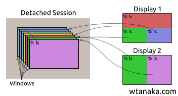
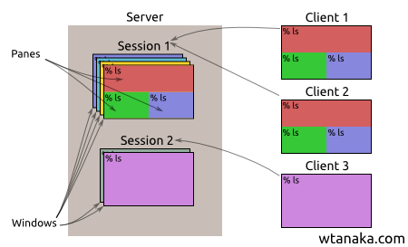
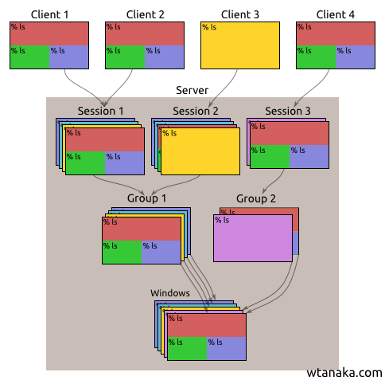

I evaluated switching from screen to tmux. tmux is a much younger project with some vocal advocates online. After looking into the differences between them, I will likely switch to tmux for a while to become familiar with it, but may end up switching back to screen because I'm used to clients being more independent from each other.
Both programs create one or more virtual terminals within a single terminal, let you switch back and forth between the virtual terminals, let you attach multiple physical terminals to the same virtual terminals, and let you reattach to your virtual terminals if your network connection is interrupted. Both tmux and screen work by creating two separate processes which they refer to by different names:
| tmux name | GNU screen name | |
|---|---|---|
| The long-lived process that stores your virtual terminal state | server | detached session |
| UI process that attaches to, views, and controls the long-lived process | client | display |
The screen model is simpler. Each (backend) session has a list of virtual terminal "windows." When you attach to or resume one of these backend sessions, your (frontend) "display" can be split into several regions. Each region displays one of the windows. With the exception of starting, stopping, and resizing the virtual windows, one display does not affect another. You can create multiple sessions which are completely independent from each other. Each display attaches to one and only one of the sessions.

In tmux, you normally only create one (backend) server for a given user on a given computer. Each server contains a list of "sessions." Each session has multiple "windows." Each window can then be split into one or more virtual terminal "panes." When you attach a (frotnend) "client", it is associated with one of the sessions, and all clients attached to that session share a current window and the session's width/height is set to the lower-bound width and lower-bound height of all currently attached clients. What are purely client-side operations in screen like switching to a different window or pulling up a pick list of windows are server-side operations in tmux which are displayed on all connected clients.

In reality, the tmux model is a little bit more complicated. Each session is attached to a "group" of windows. Different sessions with the same group can have different lower bound widths and heights and a different "current window" being displayed. Each window in the gropu is actually a link into a global pool of windows for the server, so it's possible to include the same window in multiple groups, or move a window from one group to another.

Some of the common complaints about screen are about its codebase and the status line configuration syntax. Neither of those affects me; I turned off the tmux status line, and I don't picture needing to configure it more than once. Here are the differences I found that mattered to me:
| feature | tmux | screen |
|---|---|---|
| Good choice of "prefix" command character | ✗ Ctrl-B (move cursor left) |
✗ Ctrl-A (move to start of line) |
| Vertical/Horizontal split into panes | [PREFIX] " and [PREFIX] % | [PREFIX] S and [PREFIX] | |
| Initial "Server" memory usage (RSS) | 1632 | 1308 |
| Initial "Client" memory usage (RSS) | 972 | 992 |
| Multiple sessions | 1 server process | multiple server processes |
| Multiple paste buffers | ✓ | ✗ |
| Search all scrollback buffers at once | ✓ [PREFIX] f | ✗ only can search one with [PREFIX] [ or [PREFIX] Esc followed by / or ? |
| Can be configured at runtime by executing command lines | ✓ | ✗ |
| Switch session | ✓ tmux switch -t mysession |
✗ Detach with [PREFIX] d and then reattach with screen -x [PID.TTY.HOSTNAME] |
| Screens can be moved between sessions or shared between multiple sessions | ✓ | ✗ |
| Virtual terminal can be larger than currently-attached physical terminal | ✗ | ✓ |
| zmodem client | ✗ | ✓ |
| Multiple clients with a different current screen | ✗ this is possible with tmux new-session -t [existing_session_name] to clone the session and attach to the clone, followed by tmux kill-session -t [name_of_clone_session] |
✓ screen -x |
| Automatic window renaming | ✓ windows are named based on the program running in the currently focused pane | ✗ |
Comparison was made using screen 4.01.00devel and tmux 1.8 on Ubuntu 14.04.